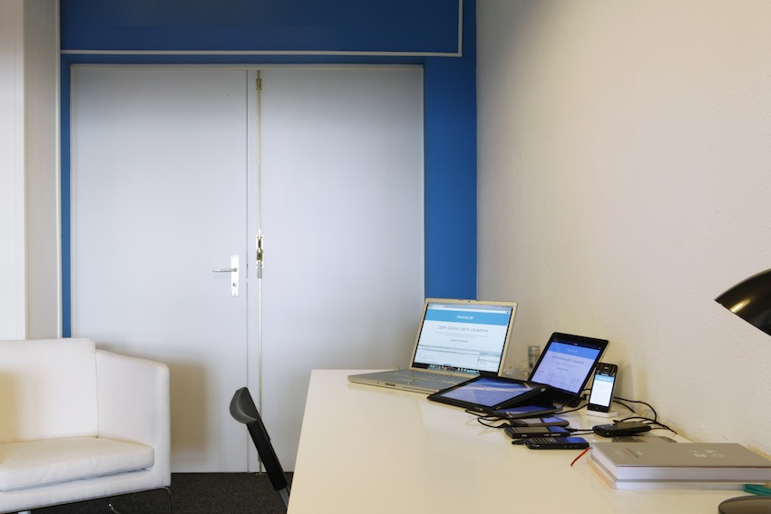
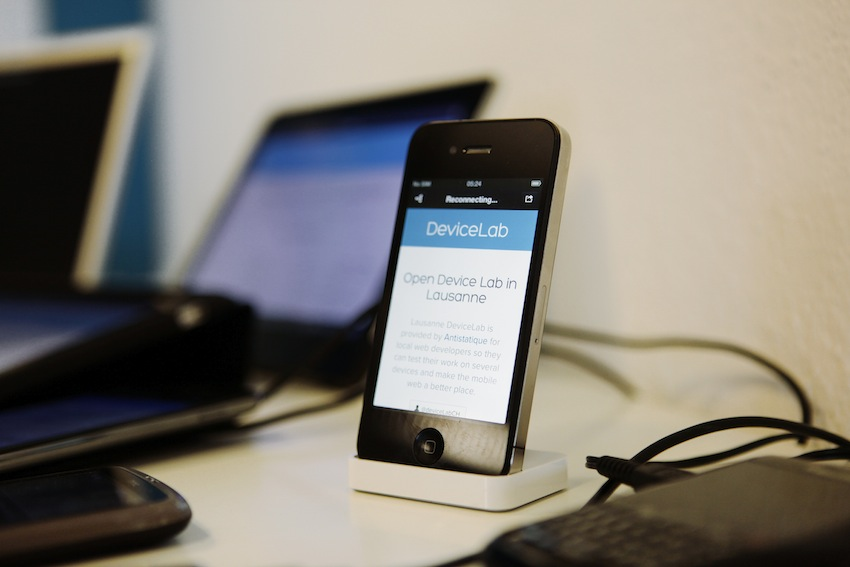

| Brand | Device | OS | Screen Size | Contributor |
|---|---|---|---|---|
| Apple | Mac Mini | OSX 10.9 with Firefox, Chrome, Safari | 1280×1024 @ 72ppi | Antistatique |
| Microsoft | Mac Mini | Windows 7 with IE10, IE9 and IE8 (Virtual machines) | 1280×1024 @ 72ppi | Antistatique |
| Nexus 7 (32Gb) | Android 4.4.2 (KitKat) | 1280×800px @ 216ppi | Antistatique | |
| Apple | iPad 1 | iOS 5.3 | 1024x768 | Antistatique |
| Apple | iPad Retina (4th generation) | iOS 7.0.2 | 2048x1536 | Antistatique |
| Apple | iPhone 4 | iOS 6.0.1 | 320x480 | Julie |
| HTC | HTC Desire | Android 2.2 (FroYo) | 480x800 | Antistatique |
| Nokia | Nokia E71 | Symbian OS 9.2 | 320x240 | Julie |
| Nokia | Nokia Lumia 800 | Windows Phone 7.5 | 800x480 | Antistatique |
| Nokia | Nokia Lumia 920 | Windows Phone 8 | 1280x768 | Antistatique |
| RIM | Blackbery 9900 | BB OS 7.1 | 640x480 | Alberto |
| RIM | Blackbery 9780 | BB OS 6 | 360x480 | Emilie |
| Samsung | Samsung Galaxy S3 | Android 4.1.2 (Gingerbread) | 1280x720 | Antistatique |
| Samsung | Samsung Galaxy Tab 10.1 (P7500) | Android 3.2 (Honeycomb) | 1280x800 | Antistatique |
You will find a workspace ready to use
Ghostlab, synchronized browser testing for web and mobile.
Adobe Edge Inspect allows iOS and Android mobile devices to be paired to a computer, and each device will display the same site using its native render and presentation modes.
Weinre is a debugger for web pages, like FireBug (for FireFox) and Web Inspector (for WebKit-based browsers), except it's designed to work remotely, and in particular, to allow you debug web pages on a mobile device such as a phone.
It's cozy and blue and you can ask for some free bier coffee

